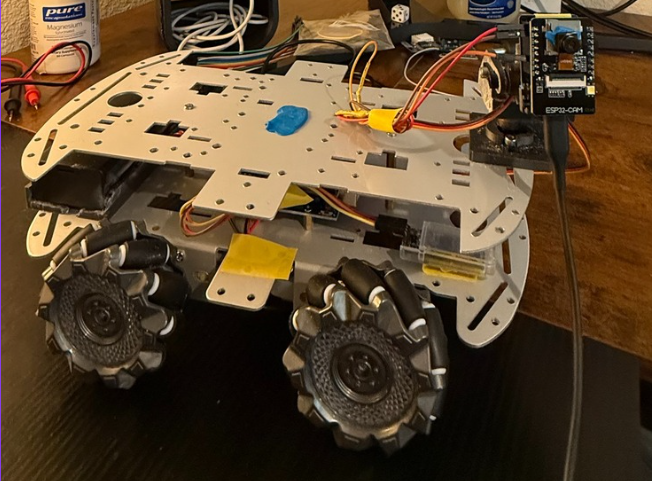
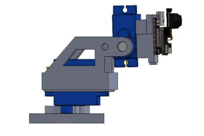
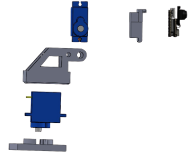

Tools: SolidWorks · Embedded Systems · 3D Printing · IoT connection
This project is a rover with six-direction movement, combining camera motion tracking and wireless video streaming to third-party web servers.

For this project, I designed a two degree of freedom (2DOF) servo mount in SolidWorks, giving the camera system full pan and tilt control. I integrated an ESP32-CAM module to enable live streaming, motion-detection triggered recording, and SD card storage, along with an HM-10 BLE module for mobile control. Using Arduino IDE, I developed the system code to host a URL-based website for First Person Video (POV) streaming. Finally, I designed and 3D printed the servo mount for the camera module to ensure stable, reliable recording.
The 2DOF pan/tilt mount was designed in SolidWorks and 3D printed. The exploded view shows the individual servos and printed brackets that make up the assembly; the assembled view shows the final pan-and-tilt configuration that carries and stabilizes the camera.


The Rover achieved movement in all six directions after hours of logging tire movememnt depending on the systems direction of path, and was operational to a limit of 50 feet from my desktop due to the BLE losing connection. Captured recordings of my first test runs off the ESP vision componnet are stored in my files, but I've been having trouble adding it to this online portfolio.
After switching majors this was my first project that I tackled, which was difficult when constructing because I learned how to integrate mechanical design of 3D printing with electronic hardware and being able to project a BLE signal compaitable with my phone for controlling movement. Lastly, the satisifying part was being able to broadcast the POV of the rover to my laptop off the ESP camera componnet, which also included other programmed features like motion and object detection.
A practical application for this rover is remote surveillance, to provide safer assessment of dangerous environments while keeping the operator at a safe distance.